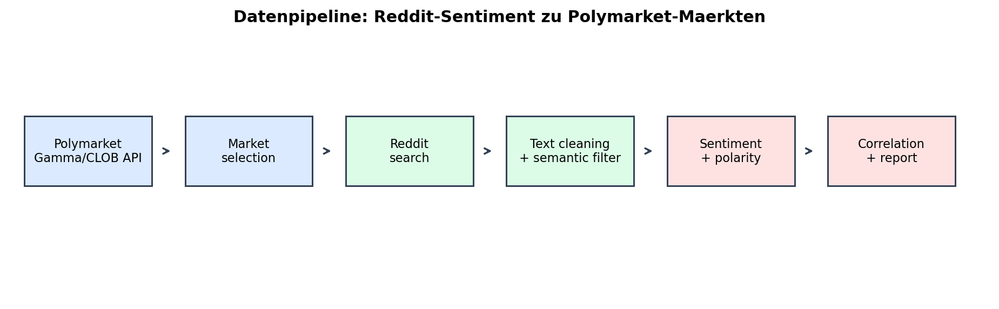
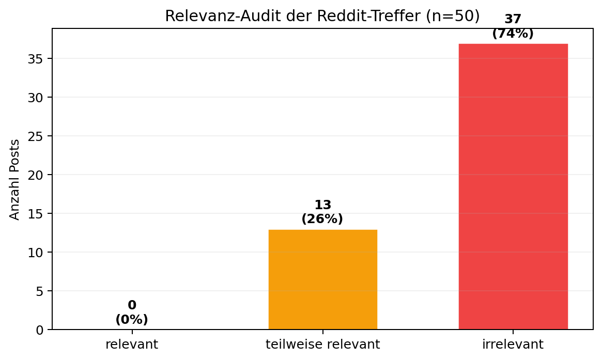
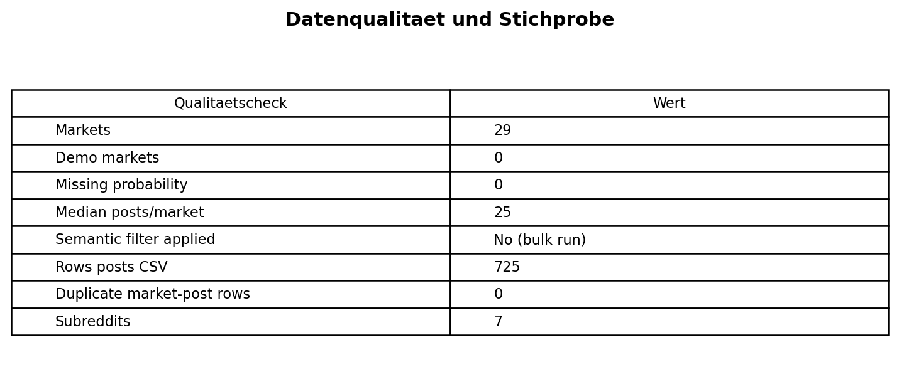
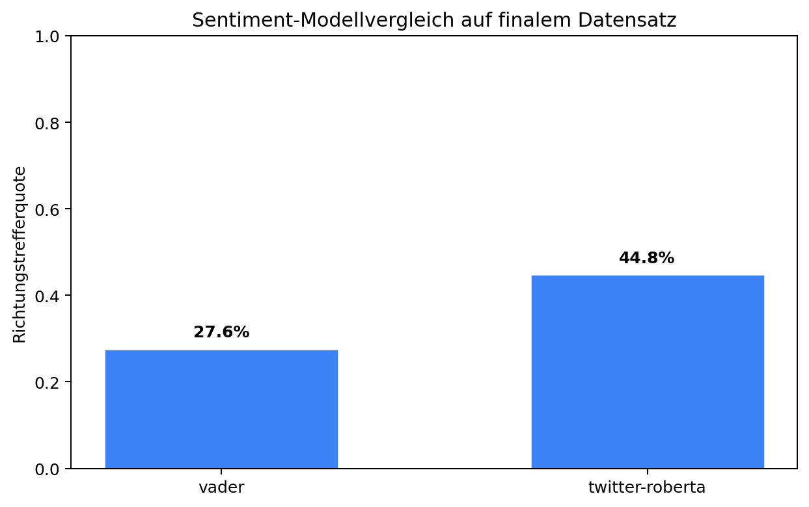
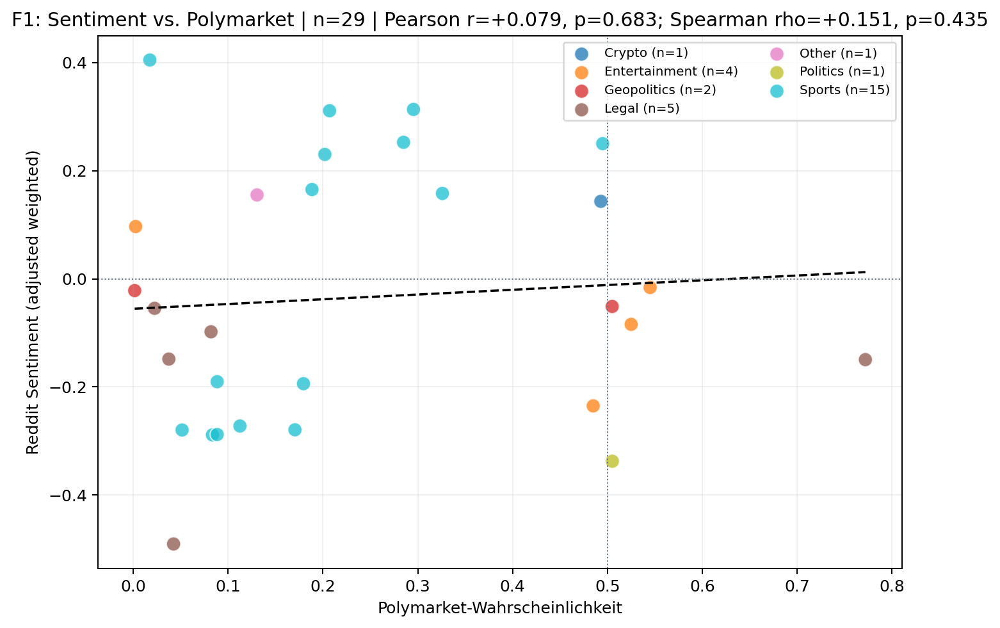
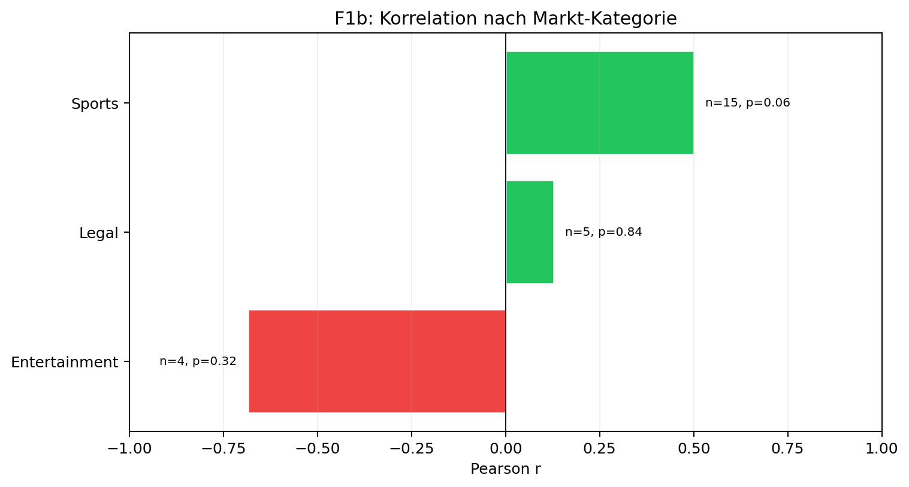
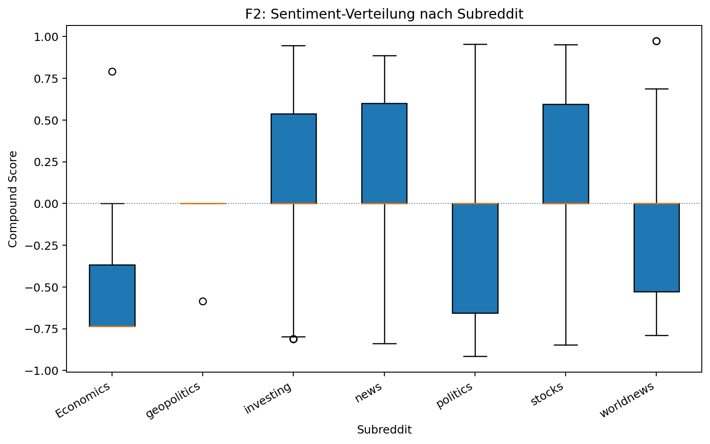
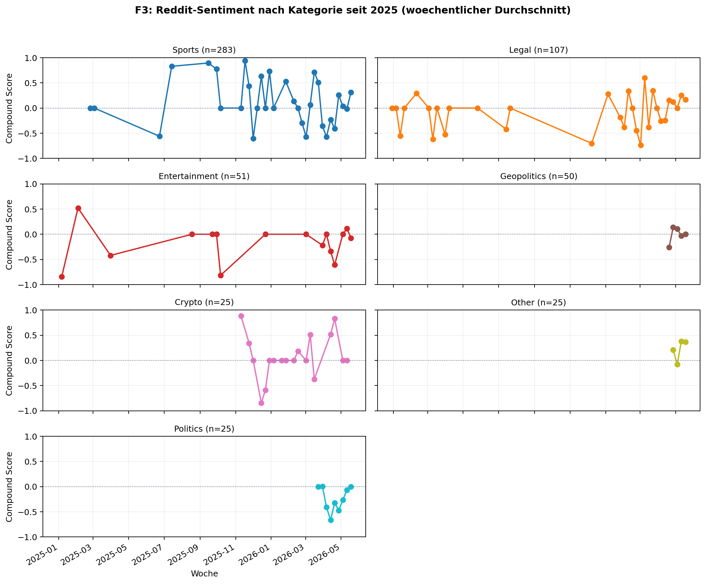
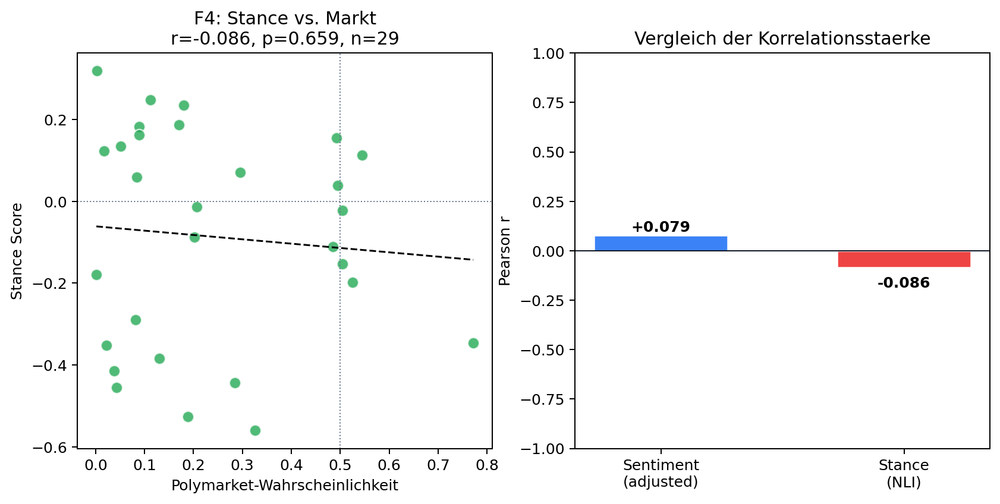

# Polymarket Reddit Sentiment
Projektbericht für Data Wrangling & Engineering FS26
Autoren: Pablo Cruz und Daliah Beck
Finaler Live-Run: 22.05.2026, 12:29 UTC
Datengrundlage: 29 Polymarket-Märkte, 725 Reddit-Posts, 7 Subreddits, keine Demo-Fallback-Daten
Dieses Projekt untersucht explorativ, ob die Stimmung in Reddit-Diskussionen mit den aktuellen Wahrscheinlichkeiten von Polymarket-Vorhersagemärkten zusammenhängt. Dafür werden aktive Polymarket-Märkte per API geladen, aus den Marktfragen Reddit-Suchbegriffe abgeleitet, passende Posts gesammelt, mit Twitter-RoBERTa klassifiziert und pro Markt zu Sentiment-Scores aggregiert. Zusätzlich wird mit einem Zero-Shot-NLI-Modell ein Stance-Score berechnet, der direkter misst, ob Reddit-Posts das Eintreten eines Ereignisses unterstützen.
Das wichtigste Ergebnis ist methodisch sauber, aber inhaltlich vorsichtig zu interpretieren: Im finalen Live-Datensatz zeigt sich kein statistisch signifikanter linearer Zusammenhang zwischen Reddit-Sentiment und Polymarket-Wahrscheinlichkeiten. Die Hauptrangkorrelation ist ebenfalls nicht signifikant. Die Richtung der Signale stimmt in 13 von 29 Märkten (44.8%) überein. Nach der verbesserten, spezifischeren Reddit-Query ist dieser Richtungswert deutlich konservativer als in der früheren Version. Das ist inhaltlich plausibel: Die neue Suche reduziert einige zufällige breite Treffer, zeigt aber auch klarer, dass Reddit-Sentiment allein keine robuste Prognose für Polymarket-Preise liefert.
Aus Sicht des Data Wrangling ist das Projekt relevant, weil es mehrere praktische Arbeitsschritte verbindet: API-Datenbeschaffung, Textdaten-Wrangling, Datenqualitätsprüfung, Harmonisierung heterogener Datenquellen, NLP-Transformationen, statistische Analyse, Visualisierung und reproduzierbare Pipeline-Ausführung.
Prediction Markets wie Polymarket bilden Markterwartungen als Preise zwischen 0 und 1 ab. Ein Preis von 0.50 entspricht grob einer vom Markt implizierten Wahrscheinlichkeit von 50%. Reddit enthält parallel dazu öffentliche Diskussionen, Nachrichtenreaktionen und subjektive Einschätzungen zu denselben Themen. Die zentrale Projektidee ist, diese beiden sehr unterschiedlichen Datenquellen zu verbinden und zu prüfen, ob sie ähnliche Signale liefern.
| Kennzahl | Wert |
|---|---|
| Polymarket-Märkte | 29 |
| Reddit-Post-Zeilen | 725 |
| Subreddits | 7 |
| Demo-Fallback-Märkte | 0 |
| Durchschnitt Posts pro Markt | 25.0 |
| Median Posts pro Markt | 25 |
| Sentiment-Modell | Twitter-RoBERTa |
| Stance-Modell | DeBERTa-v3 Zero-Shot NLI |
Die Live-Polymarket-API lieferte 100 aktive Märkte; daraus wurden 30 relevante Märkte für den Bulk-Run ausgewählt. Ein Markt wurde ausgeschlossen, weil die Reddit-Suche keine ausreichenden Posts fand. Der finale Datensatz enthält daher 29 auswertbare Märkte. Das liegt innerhalb der geplanten Akzeptanzspanne von 25 bis 30 Märkten.
| Kategorie | Märkte |
|---|---|
| Sports | 15 |
| Legal | 5 |
| Entertainment | 4 |
| Geopolitics | 2 |
| Politics | 1 |
| Crypto | 1 |
| Other | 1 |
Die aktuelle Polymarket-Live-Auswahl war stark von Sport-, Legal- und Entertainment-Märkten geprägt. Das ist ein wichtiger Befund zur Datenauswahl: Die API liefert nicht automatisch eine fachlich balancierte Stichprobe. Deshalb wird die Marktkategorie im Projekt bewusst dokumentiert und nicht nachträglich versteckt.

Die Pipeline folgt einem ETL-Muster:
text_for_sentiment kombiniert. Pro Post werden Sentiment und Stance berechnet.data/correlation_pairs_bulk.csv auf Marktebene und data/posts_per_market.csv auf Postebene.Die wichtigsten technischen Metadaten werden explizit gespeichert: api_source, is_demo_market, collected_at_utc, market_id, clob_token_id, market_url, reddit_query, sentiment_model und Postzählungen. Dadurch kann der Run im Bericht nachvollzogen werden, ohne den Code lesen zu müssen.
Die Reddit-Suche beginnt nicht mit einer frei erfundenen Query, sondern mit der Polymarket-Frage. Die Query soll aber nicht die komplette Marktfrage exakt nachbilden. Das wäre bei Reddit oft zu eng, weil Reddit-Posts selten die Polymarket-Formulierung wortgleich verwenden. Deshalb erzeugt src/market_metadata.py eine kompakte, recall-orientierte Suchanfrage:
will, would, before, after, the, of oder by werden entfernt.2026, 30, 1m oder 150000.AI, GTA, VI, US, NHL, NBA, FIFA, win, Cup, New oder San bleiben ebenfalls erhalten.X before GTA VI wird before GTA VI entfernt, falls der Markt nicht selbst über GTA VI handelt. Grund: before GTA VI ist ein Markt-Auflösungsbenchmark, aber Reddit-Posts über Trump, Taiwan oder Bitcoin enthalten diese Vergleichsformulierung fast nie. Würde man sie in der Reddit-Suche behalten, würden viele thematisch passende Posts gar nicht gefunden.Damit ist die Query bewusst ein Kompromiss: breit genug, um relevante Reddit-Diskussionen zu finden, aber spezifisch genug, um die wichtigsten Entitäten, Jahreszahlen und Ereignisbegriffe zu behalten. Die eigentliche Marktfrage bleibt in den CSVs erhalten; die Query ist nur der Suchschlüssel für Reddit.
Beispiele aus dem finalen Run:
| Polymarket-Frage | Reddit-Query |
|---|---|
Trump out as President before GTA VI? |
Trump out President |
Will China invades Taiwan before GTA VI? |
China invades Taiwan |
Will bitcoin hit $1m before GTA VI? |
bitcoin hit 1m |
GTA VI released before June 2026? |
GTA VI released June 2026 |
Will Iran win the 2026 FIFA World Cup? |
Iran win 2026 FIFA World Cup |
Will Harvey Weinstein be sentenced to no prison time? |
Harvey Weinstein sentenced no prison time |
Diese Query wird in mehreren Subreddits gesucht: politics, worldnews, stocks, investing, news, Economics und geopolitics. Pro Markt wurden im finalen Bulk-Run bis zu 25 Posts gesucht. Gespeichert werden unter anderem Reddit-ID, Titel, Text, Subreddit, Score, Kommentarzahl, Zeitstempel und URL. Dadurch ist später sichtbar, welcher Reddit-Text zu welchem Markt gehört.
Das Projekt hat zwei Modi:
| Modus | Script | Zweck | Kommentare | Semantischer Filter |
|---|---|---|---|---|
| Bulk-Run | run_bulk.py |
finaler Hauptdatensatz, schnell und stabil | nein | nein |
| Detail-Run | run_analysis.py |
tiefere Analyse mit mehr Kontext | ja, bis COMMENT_LIMIT |
ja |
Kommentare sind technisch implementiert: Mit PRAW werden Kommentare direkt über die Submission geladen; im Public-JSON-Fallback werden sie über /comments/{post_id}.json geholt. Gelöschte oder sehr kurze Kommentare werden verworfen. Für den finalen Bericht wurde der Bulk-Run verwendet, weil er reproduzierbarer und schneller ist und genügend Posts pro Markt liefert. Kommentare bleiben als Erweiterung für eine tiefere Folgeanalyse vorhanden.
Die Keyword-Suche findet passende, aber nicht perfekte Treffer. Deshalb enthält das Projekt zusätzlich einen semantischen Filter mit sentence-transformers. Die Idee ist:
all-MiniLM-L6-v2 in Embeddings umgewandelt.semantic_score < 0.20 werden im Detail-Run verworfen.semantic_score sortiert.Einfach gesagt: Der Filter prüft nicht nur, ob dasselbe Keyword vorkommt, sondern ob der Inhalt semantisch zur Marktfrage passt. Im finalen Bulk-Run wurde dieser Filter bewusst nicht aktiviert, weil er die Laufzeit stark erhöht und bei manchen Märkten zu wenige Posts übrig lassen kann. Im Bericht wird das transparent als semantic_threshold dokumentiert; im Bulk-Run ist diese Spalte leer.
Die grösste methodische Schwäche der Datenerhebung ist nicht das Sentiment-Modell, sondern die Trefferqualität der Reddit-Suche. Eine Keyword-Suche kann Posts finden, die einzelne Suchwörter enthalten, aber inhaltlich nicht zur Marktfrage passen. Deshalb wurde zusätzlich ein kleines Relevanz-Audit durchgeführt.
Aus data/posts_per_market.csv wurden 50 Reddit-Treffer reproduzierbar gezogen (random_state=26) und anhand der Marktfrage codiert:

| Kategorie | Anzahl | Anteil | Bedeutung |
|---|---|---|---|
| relevant | 0 | 0.0% | Post passt direkt zur Marktfrage. |
| teilweise relevant | 13 | 26.0% | Post passt zum Thema, aber nicht genau zur Frage. |
| irrelevant | 37 | 74.0% | Post enthält Query-Wörter, aber falschen Kontext. |
Dieses Ergebnis ist wichtig für die Interpretation: Der finale Datensatz hat gute technische Struktur, aber die Reddit-Treffer sind inhaltlich deutlich verrauscht. Die Korrelationen dürfen deshalb nicht als zuverlässige Prognosequalität gelesen werden. Der Audit ist in reports/relevance_audit_sample.csv dokumentiert.
Zusätzlich wurde für fünf Beispielmärkte geprüft, wie stark ein semantischer Filter mit Schwelle 0.20 die Trefferzahl reduzieren würde. Der finale Bulk-Run bleibt unverändert; der Vergleich dient nur als Qualitätsanalyse.
| Marktfrage | Ohne Filter | Mit Filter | Retention | Ø Similarity |
|---|---|---|---|---|
| Trump out as President before GTA VI? | 25 | 19 | 76.0% | 0.236 |
| Will China invades Taiwan before GTA VI? | 25 | 25 | 100.0% | 0.500 |
| Will bitcoin hit $1m before GTA VI? | 25 | 24 | 96.0% | 0.302 |
| Will Harvey Weinstein be sentenced to no prison time? | 25 | 12 | 48.0% | 0.219 |
| Will the Oklahoma City Thunder win the 2026 NBA Finals? | 25 | 5 | 20.0% | 0.130 |
Der Vergleich zeigt, dass der semantische Filter je nach Markt sehr unterschiedlich wirkt. Bei China/Taiwan bleibt fast alles erhalten, bei Oklahoma City Thunder dagegen nur 20%. Genau das ist ein typisches Text-Wrangling-Problem: Ein strenger Filter verbessert die inhaltliche Passung, kann aber die Fallzahl stark reduzieren.

Die Polymarket-Wahrscheinlichkeit ist in allen 29 Marktzeilen vorhanden. In den Reddit-Daten fehlen bei 244 von 725 Zeilen die text-Felder. Das ist bei Reddit normal, weil viele Posts reine Link-Posts sind und nur einen Titel besitzen. Diese Fälle wurden nicht gelöscht; für die Sentiment-Analyse wurde text_for_sentiment aus Titel plus Text gebildet. Damit bleibt der verwertbare Inhalt erhalten.
Die fehlenden Werte wurden nicht nur gezählt, sondern auch typisiert. Dabei steht MCAR für rein zufällig fehlende Werte, MAR für fehlende Werte, die durch beobachtbare Umstände erklärbar sind, und MNAR für fehlende Werte, die vom nicht beobachteten Wert selbst abhängen.
| Feld | Fehlend | Einordnung | Umgang |
|---|---|---|---|
probability |
0/29 | kein Missing | keine Imputation notwendig |
text |
244/725 | strukturell / MAR-nahe, weil Link-Posts oft keinen Body haben | Body als leerer String, Titel bleibt erhalten |
text_for_sentiment |
0/725 | kein Missing nach Transformation | Grundlage für Sentiment |
category |
API-seitig teilweise leer | MAR-nahe, weil API-Metadaten nicht immer gepflegt sind | Keyword-Taxonomie in src/market_metadata.py |
stance_score |
0/29 Märkte, 0/725 Posts | kein Missing nach Add-on-Schritt | mit scripts/add_stance_scores.py berechnet |
Eine klassische Imputation wurde bewusst nicht eingesetzt, weil bei Textdaten ein fehlender Body inhaltlich etwas anderes bedeutet als ein zufällig fehlender Zahlenwert. Stattdessen wurde die Textrepräsentation so gebaut, dass vorhandene Titelinformationen erhalten bleiben.
Reddit-Daten sind im Rohzustand ungleichmässig: Manche Posts bestehen nur aus einem Linktitel, andere haben einen langen Body, wieder andere enthalten Markdown, URLs oder gelöschte Kommentare. Für die Analyse wurde deshalb eine stabile Textspalte gebaut.
| Ausgangsdaten | Zielspalte |
|---|---|
| Reddit-Titel plus Reddit-Textkörper | text_for_sentiment |
Ein Post ohne Body bleibt dadurch trotzdem nutzbar, weil der Titel als Textgrundlage erhalten bleibt.
Die wichtigsten Entscheidungen waren:
[deleted] und [removed] werden bei Kommentaren nicht übernommen; sehr kurze Kommentare unter 10 Zeichen werden ebenfalls verworfen.Auf Ebene (market_id, post_id) gibt es 0 Duplikate. Es gibt jedoch 321 wiederholte post_ids über verschiedene Märkte hinweg. Das ist plausibel, weil derselbe Reddit-Post zu mehreren ähnlichen Märkten passen kann, etwa bei mehreren Harvey-Weinstein-Sentencing-Märkten, World-Cup-Märkten oder NHL/NBA-Märkten. Für die Marktanalyse ist deshalb die Kombination aus Markt und Post die relevante Eindeutigkeit.
Reddit-Scores sind rechtsschief: Im finalen Datensatz reicht der Score bis 89553, während das 25%-Quantil bei 3 und das 75%-Quantil bei 184 liegt. Einzelne virale Posts sind deshalb echte Ausreisser im Engagement. Sie wurden nicht gelöscht, weil hohe Sichtbarkeit ein reales Signal sein kann. Stattdessen wird neben dem einfachen Durchschnitt mean_compound auch weighted_compound berechnet, wobei Reddit-Scores mit log1p(score) gewichtet werden. Diese Log-Transformation ist eine robuste Outlier-Strategie: hohe Scores zählen mehr, dominieren aber nicht die gesamte Marktmetrik.
Der finale Bulk-Run verwendet keinen semantischen Filter, sondern eine schnelle, reproduzierbare Keyword-Suche. Der semantische Filter ist im Detail-Run vorbereitet, wurde für den finalen Hauptdatensatz aber nicht aktiviert. Wichtig: api_source = polymarket_live für alle 29 Märkte; es wurden keine Demo-Fallback-Märkte für die Ergebnisse verwendet.
Die Datenqualität wurde entlang mehrerer Dimensionen geprüft:
| Dimension | Prüfung im Projekt | Ergebnis |
|---|---|---|
| Vollständigkeit | Missing Values in Markt- und Postdaten | keine fehlenden Wahrscheinlichkeiten, kein fehlendes text_for_sentiment |
| Eindeutigkeit | Duplikate auf (market_id, post_id) |
0 Duplikate |
| Plausibilität | probability im Wertebereich [0, 1] |
0.0015 bis 0.7720 |
| Aktualität | collected_at_utc und Reddit-Zeitstempel |
Run-Zeitpunkt und Post-Zeiten gespeichert |
| Herkunft / Provenienz | api_source, market_url, reddit_query, subreddits |
Datenherkunft pro Zeile nachvollziehbar |
| Konsistenz | stabile Spalten in Market- und Post-Level CSVs | im Data Dictionary dokumentiert |
Damit wird nicht nur bereinigt, sondern auch sichtbar gemacht, welche Qualitätsannahmen für die Analyse gelten.
Zusätzlich wurde mit scripts/validate_outputs.py ein reproduzierbarer Check der finalen CSVs erstellt:
| Check | Ergebnis | Status |
|---|---|---|
| Mindestens 25 auswertbare Märkte | 29 | OK |
| Keine Demo-Fallback-Märkte im Hauptergebnis | 0 | OK |
| Keine fehlenden Polymarket-Wahrscheinlichkeiten | 0 | OK |
| Wahrscheinlichkeiten im Wertebereich [0, 1] | 0.0015 bis 0.7720 | OK |
| Keine doppelten Markt-Post-Zeilen | 0 | OK |
Keine fehlenden text_for_sentiment-Werte |
0 | OK |
| Keine fehlenden Markt-Stance-Scores | 0 | OK |
| Keine fehlenden Post-Stance-Scores | 0 | OK |
| Reddit-Queries passen zur aktuellen Keyword-Logik | 0 | OK |
| Semantischer Filter im finalen Bulk-Run | nein | OK |
Die zentrale Wrangling-Leistung liegt darin, strukturierte Marktdaten und unstrukturierte Reddit-Texte vergleichbar zu machen.
| Schritt | Polymarket | Harmonisierung | |
|---|---|---|---|
| Einheit | Marktfrage | Post | Marktfrage wird Suchanker |
| Format | JSON/API | JSON/API | DataFrames und CSV |
| Zeit | aktueller Marktpreis | Post-Zeitstempel | gemeinsamer Run-Zeitpunkt |
| Inhalt | Ereigniswahrscheinlichkeit | Text/Meinung | Sentiment und Stance |
| Kategorie | oft leer | Subreddit | Keyword-Taxonomie |
Die Harmonisierung wird auf drei Heterogenitätsdimensionen betrachtet:
| Dimension | Problem im Projekt | Lösung |
|---|---|---|
| Syntax | Polymarket und Reddit liefern verschachteltes JSON; der Bericht braucht Tabellen | API-JSON wird in pandas DataFrames überführt und als CSV gespeichert |
| Struktur | Polymarket-Einheit ist ein Markt, Reddit-Einheit ist ein Post oder Kommentar | zwei Zielschemas: correlation_pairs_bulk.csv auf Marktebene und posts_per_market.csv auf Postebene |
| Semantik | Wahrscheinlichkeit, Sentiment und Stance messen unterschiedliche Konzepte | Data Dictionary, Polarity-Korrektur und Stance Detection machen Bedeutungen explizit |
Die Harmonisierung ist retrospektiv: Die Datenquellen wurden nicht gemeinsam geplant, sondern nachträglich über die Marktfrage, Suchbegriffe und IDs zusammengeführt. Daraus entstehen Trade-offs. Strengere Filter würden die semantische Passung erhöhen, aber Abdeckung verlieren; ein breiterer Filter liefert mehr Posts, kann aber irrelevante Treffer enthalten.
Da Polymarket nicht für alle Märkte verlässliche Kategorien liefert, wurde eine regelbasierte Taxonomie verwendet. Kategorien werden aus der Marktfrage inferiert, etwa Sports, Legal, Geopolitics, Entertainment, Politics und Crypto. Diese Transformation ist transparent im Code und im Data Dictionary dokumentiert.
Für die Sentiment-Analyse wird zuerst pro Reddit-Zeile ein auswertbarer Text gebildet:
| Ausgangsdaten | Verwendeter Analyse-Text |
|---|---|
| Titel und Textkörper eines Reddit-Posts | text_for_sentiment |
Das ist wichtig, weil viele Reddit-Posts nur einen Titel und keinen Body-Text haben. Der fehlende Body wird deshalb nicht als Fehler behandelt, sondern der Titel bleibt als verwertbare Information erhalten.
Danach klassifiziert cardiffnlp/twitter-roberta-base-sentiment-latest jeden Text als positive, neutral oder negative. Das Modell ist für Social-Media-Sprache geeignet und passt deshalb besser zu Reddit als ein rein finanzspezifisches Modell. Die Implementierung wandelt die Modellantwort in einen numerischen compound-Score um:
| Modellentscheidung | Beispielhafte Modell-Konfidenz | compound im Projekt |
|---|---|---|
| positive | 0.82 | +0.82 |
| neutral | 0.91 | 0.00 |
| negative | 0.76 | -0.76 |
Der Score bedeutet also nicht "Anteil positiver Wörter", sondern: Das Modell erkennt die Gesamtstimmung des Texts und die Konfidenz wird auf eine Skala von -1 bis +1 gebracht. Für Leserinnen und Leser ohne NLP-Vorwissen kann man es so lesen:
| Einfaches Beispiel | Sentiment-Interpretation |
|---|---|
| "This is great news, the outlook looks strong." | positiv, hoher positiver Score |
| "This outcome is terrible and confidence is collapsing." | negativ, hoher negativer Score |
| "The final starts tomorrow at 8pm." | neutral, Score nahe 0 |
Pro Markt werden die Post-Scores anschliessend aggregiert:
mean_compound: einfacher Durchschnitt aller Sentiment-Scores zu diesem Markt.weighted_compound: gewichteter Durchschnitt mit log1p(score), damit Reddit-Posts mit mehr Upvotes etwas stärker zählen, aber einzelne virale Posts nicht alles dominieren.Das Projekt unterstützt drei Sentiment-Modelle, weil sie unterschiedliche Stärken haben:
| Modell | Idee | Vorteil | Nachteil | Rolle im Projekt |
|---|---|---|---|---|
| VADER | lexikon- und regelbasiertes Sentiment | sehr schnell, transparent, kein Download | weniger gut bei Kontext, Slang, Ironie und komplexen Sätzen | Baseline |
| FinBERT | BERT-Modell für Finanztexte | gut für Unternehmens- und Finanznachrichten | nicht ideal für Reddit-Slang, Sport-, Legal- und Entertainment-Märkte | optionaler Vergleich |
| Twitter-RoBERTa | Transformer-Modell für Social-Media-Texte | passend für kurze, informelle Online-Texte | langsamer, grösseres Modell | finaler Standard |
Die Entscheidung für Twitter-RoBERTa ist deshalb inhaltlich begründet: Die Datenquelle ist Reddit, also Social Media. FinBERT wäre naheliegend, wenn der Datensatz hauptsächlich aus Finanznachrichten oder Unternehmensmeldungen bestehen würde. Der finale Live-Datensatz ist aber stark von Sports, Legal und Entertainment geprägt. Ein finanzspezifisches Modell wäre dort nicht automatisch besser.
Ein echter Modellvergleich wäre nur mit manuell gelabelten Reddit-Posts sauber möglich, weil man dann messen könnte, welches Modell die menschliche Sentiment-Einschätzung am besten trifft. Ohne Goldstandard kann man nur operative Kriterien vergleichen: Plausibilität für die Textdomäne, Laufzeit, Korrelation mit Polymarket und Richtungstrefferquote. Dafür wurde scripts/compare_sentiment_models.py ergänzt.
Auf dem finalen Datensatz ergibt der leichte Vergleich:

| Modell | Märkte | Pearson r | Spearman rho | Richtungstrefferquote |
|---|---|---|---|---|
| VADER | 29 | +0.0690 | +0.1146 | 27.6% |
| Twitter-RoBERTa | 29 | +0.0791 | +0.1508 | 44.8% |
Diese Werte beweisen nicht, dass Twitter-RoBERTa allgemein "das beste" Modell ist. Sie zeigen aber, dass VADER im finalen Datensatz als einfache Baseline schwächer zur Marktrichtung passt. Twitter-RoBERTa bleibt deshalb die plausibelste Wahl für den finalen Reddit-Social-Media-Run. FinBERT kann mit python scripts/compare_sentiment_models.py --include-finbert nachgerechnet werden, wurde aber wegen Laufzeit und geringerer Domänenpassung nicht als finaler Standard gesetzt.
Sentiment misst Stimmung, aber nicht automatisch Zustimmung zur Marktfrage. Das ist bei Prediction Markets entscheidend. Beispiel:
| Marktfrage | Reddit-Aussage | Sentiment | Bedeutung für die Marktfrage |
|---|---|---|---|
| "Will Team X win?" | "Team X looks unbeatable." | positiv | spricht eher für "Ja" |
| "Will there be a recession?" | "The economy looks strong, recession fears are fading." | positiv | spricht eher gegen "Ja" |
Bei negativ gerahmten Fragen wie Rezession, Krieg, Crash oder Verurteilung kann positive Stimmung also bedeuten, dass das negative Ereignis weniger wahrscheinlich wirkt. Deshalb berechnet das Projekt eine polarity pro Marktfrage und daraus adjusted_compound bzw. adjusted_weighted. Bei positiv gerahmten Fragen bleibt das Vorzeichen gleich, bei negativ gerahmten Fragen wird es invertiert.
Stance Detection wurde ergänzt, weil sie methodisch näher an Polymarket liegt. Sie fragt nicht "Ist der Text positiv oder negativ?", sondern "Unterstützt der Text die Aussage, dass das Ereignis eintritt?"
Der Ablauf ist:
MoritzLaurer/deberta-v3-base-zeroshot-v2.0 vergleicht den Reddit-Text mit zwei Kandidaten:stance_score = P(ja) - P(nein).Dabei bedeutet P(ja): Das Modell hält es für wahrscheinlich, dass der Text das Eintreten des Ereignisses unterstützt. P(nein) bedeutet: Das Modell hält es für wahrscheinlich, dass der Text gegen das Eintreten des Ereignisses spricht.
Die Interpretation ist:
| Beispielhafte NLI-Werte | stance_score |
Bedeutung |
|---|---|---|
| P(happen)=0.80, P(not happen)=0.10 | +0.70 | Text spricht für das Ereignis |
| P(happen)=0.15, P(not happen)=0.75 | -0.60 | Text spricht gegen das Ereignis |
| P(happen)=0.48, P(not happen)=0.45 | +0.03 | kaum klare Richtung |
Damit löst Stance ein Problem, das Sentiment nicht sauber lösen kann: Ein positiver Satz wie "Great, no recession is coming" ist positiv im Ton, aber klar gegen die Marktfrage "Will there be a recession?". Stance soll diese Richtung direkter erfassen.
Nach der Transformation liegt pro Markt eine Zeile mit Polymarket-Wahrscheinlichkeit und Reddit-Metriken vor. Die wichtigsten Analysefelder sind:
| Feld | Rolle in der Analyse |
|---|---|
probability |
aktuelle Polymarket-Yes-Wahrscheinlichkeit |
weighted_compound |
gewichtetes Reddit-Sentiment pro Markt |
adjusted_weighted |
Sentiment nach Polarity-Korrektur |
stance_score |
Zustimmung/Ablehnung zum Ereignis |
n_total |
Anzahl verwendeter Reddit-Posts zum Markt |
Die Korrelationen in F1 und F4 entstehen dann aus diesen Marktzeilen: Pearson misst den linearen Zusammenhang, Spearman den Zusammenhang der Rangordnung. Die Richtungsübereinstimmung ist ein einfacherer Zusatzcheck: Polymarket wird als "Ja-Richtung" gewertet, wenn probability > 0.5; Reddit wird als "Ja-Richtung" gewertet, wenn adjusted_weighted > 0. Stimmen beide Richtungen überein, zählt der Markt als Treffer.

| Metrik | Pearson r | p-Wert | Spearman rho | p-Wert |
|---|---|---|---|---|
| Weighted Sentiment | +0.0791 | 0.6833 | +0.1508 | 0.4350 |
| Adjusted Weighted Sentiment | +0.0791 | 0.6833 | +0.1508 | 0.4350 |
Die lineare Korrelation ist praktisch null und statistisch nicht signifikant. Die Rangkorrelation ist positiv, aber ebenfalls nicht signifikant. Daraus folgt: In diesem Live-Datensatz kann kein belastbarer Zusammenhang zwischen Reddit-Sentiment und Polymarket-Wahrscheinlichkeiten nachgewiesen werden.
Die Richtungsübereinstimmung ist im aktualisierten Run konservativ: In 13 von 29 Märkten (44.8%) zeigen Polymarket und Reddit dieselbe grobe Richtung, wenn man Polymarket > 50% und adjusted weighted sentiment > 0 als positive Erwartung interpretiert. Dieser Wert spricht nicht für Prognosekraft. Methodisch ist das trotzdem wertvoll, weil die verbesserte Query nun weniger auf zufällig breite Treffer setzt und die Limitation von reinem Sentiment klarer sichtbar macht.

Für Kategorien mit mindestens drei Märkten ergibt sich:
| Kategorie | n | Pearson r | p-Wert |
|---|---|---|---|
| Entertainment | 4 | -0.6844 | 0.3156 |
| Legal | 5 | +0.1279 | 0.8375 |
| Sports | 15 | +0.5002 | 0.0576 |
Die Kategorieanalyse zeigt keine signifikanten Zusammenhänge. Sports liegt mit r = +0.5002 und p = 0.0576 nahe an einem explorativ interessanten Signal, bleibt aber oberhalb der üblichen Signifikanzgrenze. Entertainment und Legal sind wegen sehr kleiner n nicht robust interpretierbar. Die meisten anderen Kategorien sind zu klein für eine separate Korrelationsanalyse.

| Subreddit | n | Mittelwert | Median | Positive % | Negative % |
|---|---|---|---|---|---|
| stocks | 277 | +0.1624 | 0.0000 | 33.6 | 12.6 |
| investing | 165 | +0.1222 | 0.0000 | 26.7 | 10.9 |
| news | 53 | +0.0615 | 0.0000 | 26.4 | 18.9 |
| geopolitics | 19 | -0.0308 | 0.0000 | 0.0 | 5.3 |
| worldnews | 49 | -0.1217 | 0.0000 | 6.1 | 26.5 |
| politics | 155 | -0.2342 | 0.0000 | 6.5 | 43.2 |
| Economics | 7 | -0.4116 | -0.7344 | 14.3 | 71.4 |
Der Kruskal-Wallis-Test zeigt einen deutlichen Unterschied zwischen Subreddits: H = 92.05, p = 1.14e-17. Damit unterscheidet sich die Sentiment-Verteilung zwischen den Subreddits statistisch signifikant. Inhaltlich ist das plausibel: stocks und investing sind im Datensatz positiver, während politics, worldnews und Economics deutlich negativer ausfallen.

Die Reddit-Zeitstempel reichen insgesamt von 13.06.2009 bis 22.05.2026 und verteilen sich auf 235 Kalendertage. Für die Visualisierung wurde der Zeitraum jedoch bewusst auf Posts ab 01.01.2025 gekürzt. Dadurch bleiben 566 Posts auf 144 Kalendertagen übrig, und die einzelnen Kategorien sind deutlich besser lesbar. Die Grafik zeigt wöchentliche Durchschnittswerte je Kategorie in separaten Panels.
Die älteren Posts bleiben im Datensatz dokumentiert, werden aber nicht in der Zeitgrafik gezeigt, weil sie die Achse stark auseinanderziehen und die aktuelle Marktphase optisch überdecken. Die Zeitreihe ist weiterhin als Datenexploration zu verstehen: Sie zeigt, wann Reddit-Posts zu den verwendeten Suchbegriffen entstanden sind, aber nicht, ob Reddit dem Markt zeitlich vorausläuft. Für eine robuste Lead-Lag-Analyse müsste die Pipeline täglich Polymarket-Preise und Reddit-Sentiment sammeln.

| Metrik | Pearson r | p-Wert | Spearman rho | p-Wert |
|---|---|---|---|---|
| Stance Score | -0.0855 | 0.6591 | -0.1123 | 0.5618 |
Der Stance-Score korreliert im finalen Datensatz nicht stärker mit Polymarket als das Sentiment. Das ist ein wichtiges Ergebnis, weil Stance methodisch eigentlich näher an der Marktfrage liegt. Die fehlende Signifikanz kann mehrere Ursachen haben: kleine Stichprobe, unscharfe Reddit-Suche, mehrere sehr ähnliche Märkte, breite Marktkategorien und die Tatsache, dass Polymarket-Preise nicht nur Textstimmung, sondern auch Liquidität, Spezialwissen und Marktmechanik abbilden.
Die meisten Visualisierungen wurden mit scripts/generate_report_assets.py aus den finalen CSVs erzeugt. Die Audit-Grafik stammt aus scripts/audit_reddit_quality.py. Jede Grafik ist ohne Notebook-Ausführung reproduzierbar.
| Grafik | Zweck |
|---|---|
pipeline_diagram.png |
Erklärt die Datenpipeline von API bis Bericht. |
data_quality_summary.png |
Fasst Stichprobe und Qualitätschecks zusammen. |
correlation_scatter.png |
Zeigt F1: Sentiment vs. Polymarket. |
category_correlation.png |
Zeigt F1b: Korrelation nach Kategorie. |
model_comparison.png |
Vergleicht Sentiment-Modelle als methodische Robustheitsprüfung. |
relevance_audit.png |
Zeigt die manuell codierte Qualität einer Reddit-Trefferstichprobe. |
subreddit_boxplot.png |
Zeigt F2: Verteilung nach Subreddit. |
sentiment_timeline.png |
Zeigt F3: zeitliche Entwicklung. |
stance_comparison.png |
Zeigt F4: Sentiment vs. Stance. |
Python ist für dieses Projekt passend, weil API-Abfragen, JSON-Verarbeitung, DataFrames, NLP-Modelle, Statistik und Visualisierung in einer reproduzierbaren Pipeline verbunden werden können. Low-Code-Tools wären für diese Kombination weniger geeignet, weil die Logik für Reddit-Suche, Polymarket-Metadaten, Sentiment-Modelle, Stance Detection und Report-Assets zu spezifisch ist.
requests: API-Zugriffe auf Polymarket und Reddit.pandas / numpy: Datenstrukturierung, Aggregation und CSV-Export.scipy: Pearson, Spearman und Kruskal-Wallis.transformers / torch: Twitter-RoBERTa und DeBERTa-NLI.matplotlib: reproduzierbare Berichtsgrafiken.streamlit: exploratives Dashboard als Bonus.python run_bulk.py
python scripts/add_stance_scores.py
python scripts/compare_sentiment_models.py
python scripts/generate_report_assets.py
python scripts/audit_reddit_quality.py
python scripts/validate_outputs.py
python scripts/render_final_report.py
Die finalen Ergebnisse liegen danach in:
data/correlation_pairs_bulk.csvdata/posts_per_market.csvreports/report_summary.mdreports/reddit_quality_audit.mdreports/validation_checks.mdreports/figures/*.pngIn diesem Projekt wurden aktive Polymarket-Märkte mit Reddit-Diskussionen verbunden, um zu untersuchen, ob öffentliche Online-Stimmung mit Marktpreisen von Vorhersagemärkten zusammenhängt. Dafür wurden Polymarket-Daten per API geladen, aus den Marktfragen Reddit-Suchanfragen abgeleitet, Posts aus mehreren Subreddits gesammelt und die Texte anschliessend mit Sentiment- und Stance-Modellen ausgewertet. Aus den einzelnen Post-Scores entstand pro Markt ein aggregierter Datensatz, der mit den Polymarket-Wahrscheinlichkeiten verglichen werden konnte.
Die grösste Schwierigkeit lag in der inhaltlichen Zuordnung zwischen Marktfrage und Reddit-Posts. Eine zu enge Suchanfrage findet kaum Beiträge, eine zu breite Suchanfrage nimmt schnell irrelevante Diskussionen auf. Deshalb wurde die Keyword-Extraktion angepasst: Jahreszahlen, Zahlenwerte und zentrale Entitäten bleiben erhalten, während schwache Fragewörter und reine Markt-Benchmarks wie before GTA VI entfernt werden, wenn sie die Reddit-Suche eher verschlechtern. Trotzdem bleibt diese Zuordnung eine wichtige Limitation, weil Reddit-Posts nicht speziell für Polymarket-Fragen geschrieben werden.
Die Ergebnisse zeigen keinen statistisch signifikanten Zusammenhang zwischen Reddit-Sentiment und Polymarket-Wahrscheinlichkeiten. Auch der Stance-Score, der direkter misst, ob ein Text das Eintreten eines Ereignisses unterstützt, korreliert im finalen Datensatz nicht stärker mit den Marktpreisen. Das spricht dagegen, Reddit-Stimmung in dieser Form als einfache Prognosequelle zu interpretieren. Plausibel ist, dass Polymarket-Preise nicht nur öffentliche Stimmung widerspiegeln, sondern auch Liquidität, Spezialwissen, Marktmechanik, Nachrichtenlage und Erwartungen einzelner Trader.
Trotzdem liefert die Analyse verwertbare Erkenntnisse. Die Sentiment-Verteilungen unterscheiden sich deutlich zwischen Subreddits: Finanznahe Subreddits wie stocks und investing sind im Datensatz positiver, während politics, worldnews und Economics negativer ausfallen. Zudem zeigt die Kategorieanalyse, dass einzelne Themenbereiche unterschiedlich reagieren können, auch wenn die Stichprobe für robuste Aussagen noch zu klein ist. Für eine nächste Version wäre vor allem eine tägliche Datensammlung über mehrere Wochen sinnvoll, damit sich echte Zeitverläufe, Marktbewegungen und mögliche Lag-Effekte untersuchen lassen.